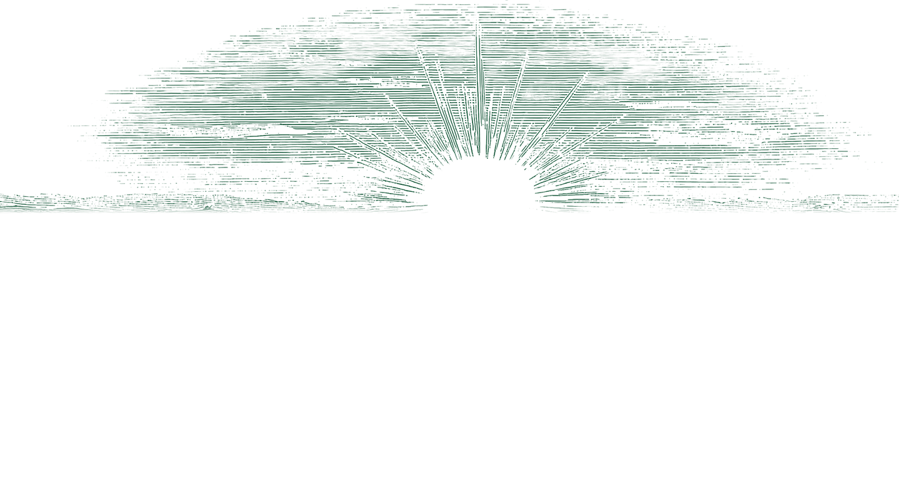
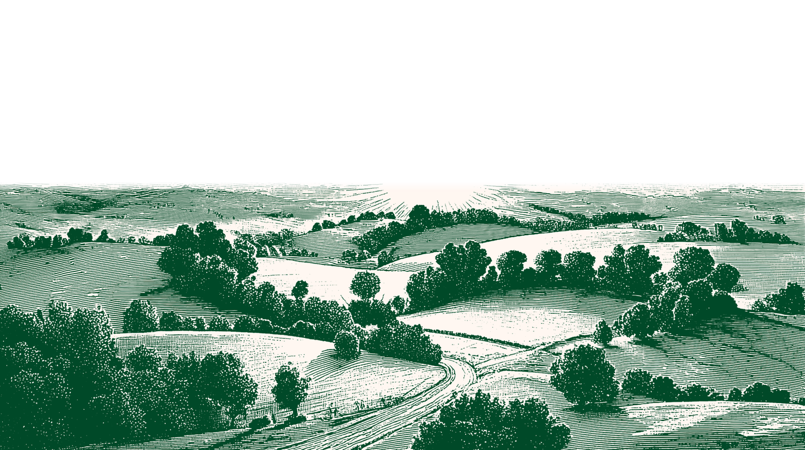

Ogni mattina mamma o papà escono per andare al lavoro.
Ma dove vanno?
Scena 01 · La domanda Volo di drone animato
- A schermo
- «Ogni mattina mamma o papà escono per andare al lavoro.» · «Ma dove vanno?»
- Voce
- Ogni mattina mamma o papà escono di casa per andare al lavoro. Ma dove vanno?
- Regia
- Una ripresa da drone, ma disegnata: l'illustrazione «campi» del DS in campagna, divisa in livelli. La camera vola in avanti sulle colline, leggermente inclinata, con il piccolo ondeggiare di un drone in aria; il cielo è lontano e cresce meno della terra, così si sente la profondità. Intanto sorge il sole, un cerchio arancio pieno sopra il tratto. Lungo la strada compaiono dei puntini arancio, i passi di mamma e papà che partono: il drone li segue verso l'orizzonte. La domanda entra per ultima, più grande e in arancio. Nel montaggio finale il volo si può rifare in After Effects con gli stessi livelli (cielo, terra, sole).